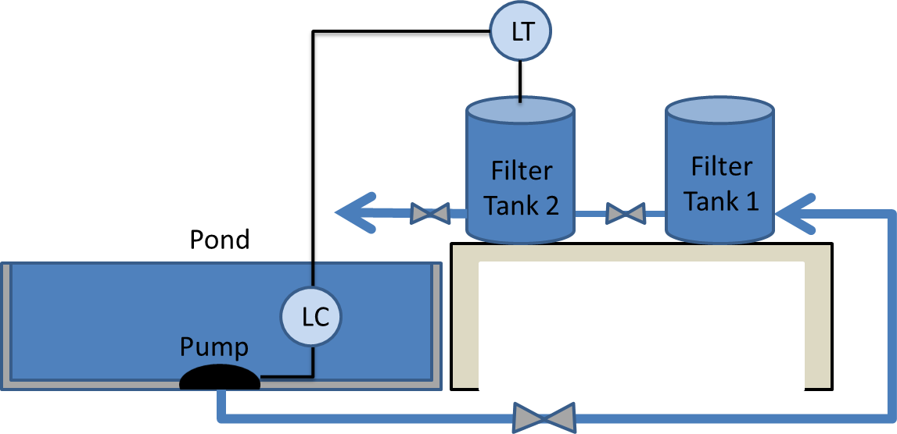
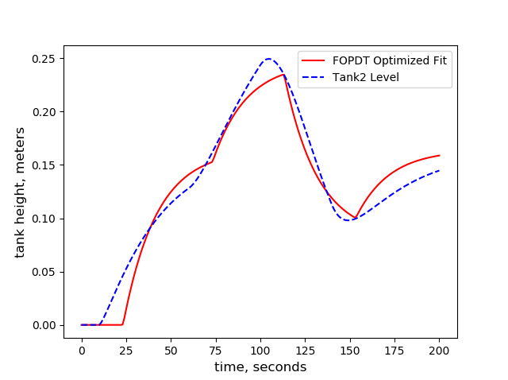

Automation of Liquid Level Control Through PID Controller
Optimization
Situation: Develop a control algorithm
to control the fluid level of a pump fed system for a pond.
Task: Develop a PID controller in python to control
the fluid level height of a two tank gravity drainage system with
an in-line pump. Use optimization techniques to tune the controller.
Action: Built process models from fundamentals
and coded PID controller. Optimized controller by regression of parameters
of an empirical model.
Result: Received an A+ on the project.

Shows the process model of the pump fed system. Valves are
used to simulate pressure loss in the lines.
×
Shows a doublet test of the process model.
×

Minimization of the sum of squared errors is applied to fit a FOPDT model to the
step response of tank 2. Parameters acquired from the process model are used
to tune the PID controller.
×
Shows the controller performance using the tuning parameters
from optimization.
×
Shows the controller response with slight tuning.
×